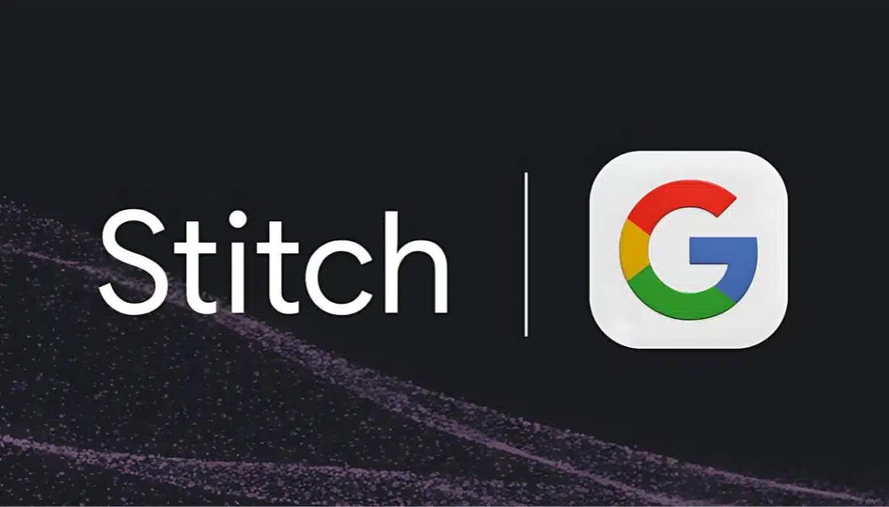
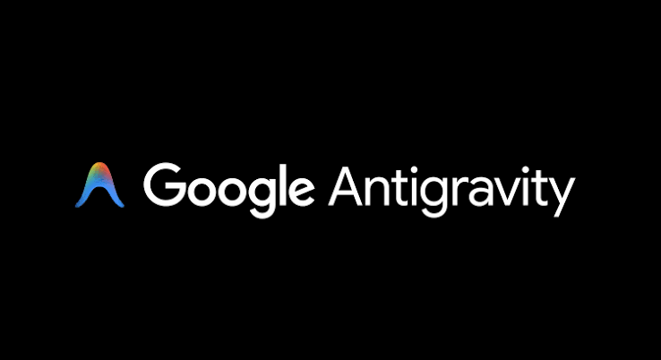

Pendahuluan
Pengenalan Google Stitch dan Google Antigravity
Pengenalan Stitch

Google Stitch adalah platform desain prototype visual yang memudahkan perancang dan pengembang dalam berkolaborasi membangun rancangan aplikasi secara interaktif.
Fitur-fitur Utama Google Stitch:
- Visual Workspace Editor : Menyusun halaman web menggunakan komponen UI yang modern, dinamis, dan terstruktur.
- Design System Controller : Mengatur token desain global (warna, font,
spacing, radius) melalui dokumen configuration
design.md. - Stitch Generate Prototipe Instan : Menggabungkan seluruh halaman rancangan menjadi prototype interaktif secara otomatis dalam sekali klik.
- Google Stitch MCP Server Integration : Mengekspor modul halaman dan prototype dalam bentuk server MCP agar dapat diakses secara langsung oleh AI Coding Assistant.
warning Kekurangan Stitch (Vibe Design)
- Sampai sekarang masih beta atau percobaan.
- Hasil desain tidak konsisten.
- Kurang memahami pengguna.
- Sulit melakukan revisi spesifik.
- Terlalu bergantung pada AI.
verified Solusi
- Buat design system terlebih dahulu.
- Membuat user persona atau requirement dan usability testing.
- Gunakan prompt spesifik.
- Tetap gunakan prinsip UI/UX.
Pengenalan Antigravity

Google Antigravity adalah AI Coding Assistant canggih yang dirancang sebagai asisten pengembang (IDE & Chat) untuk melakukan penulisan dan modifikasi kode secara agentic.
Fitur-fitur Utama Google Antigravity:
- IDE & Agentic Workflow : Berpasangan secara langsung (pair programming) dengan pengembang untuk menulis, meninjau, dan memodifikasi file dalam workspace.
- Integration with MCP Servers : Terkoneksi ke server MCP Stitch untuk membaca design system dan kerangka halaman secara dinamis.
- Automated Code Blueprint (Implementation Plan) : Menyusun rancangan implementasi (Implementation Plan) dan langkah verifikasi sebelum melakukan penulisan kode sumber.
- Interactive Code Refinement : Membaca instruksi review dari user secara langsung untuk memperbarui dan merevisi kode secara iteratif hingga mencapai hasil akhir yang diinginkan.
warning Kekurangan Antigravity (Vibe Coding)
- Kode biasanya masih mengandung bug.
- Kode kurang terstruktur.
- Developer kurang memahami kode.
- Masalah dependensi.
verified Solusi
- Pahami fundamental coding atau programming.
- Berikan AI context project yang jelas.
- Lakukan code review dan testing.